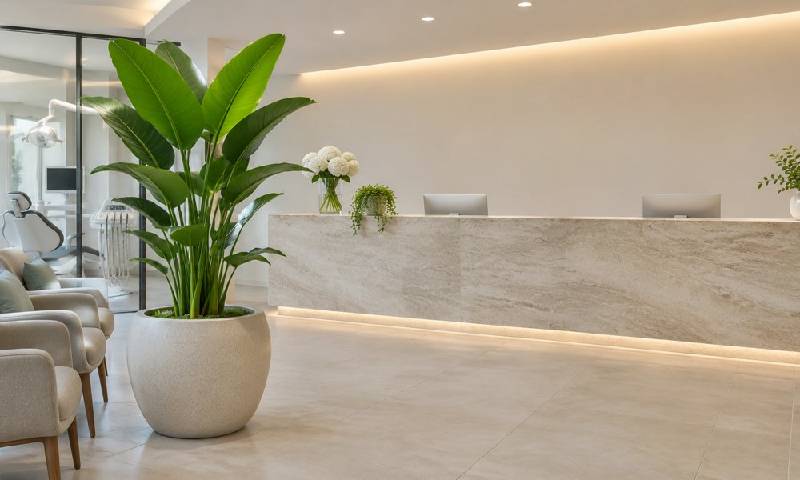
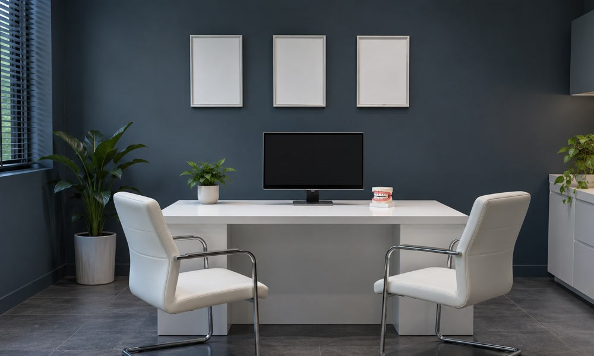
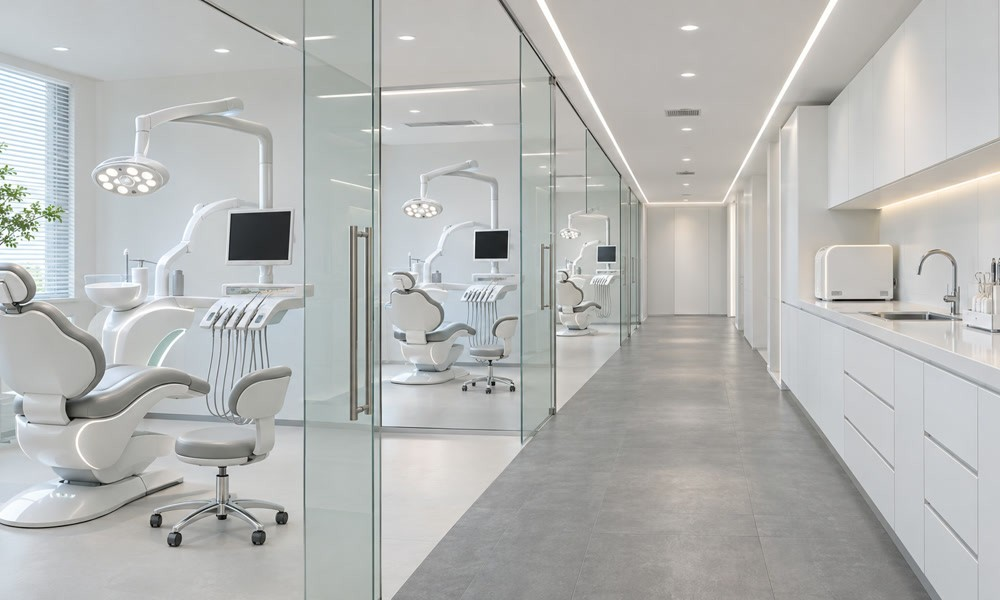
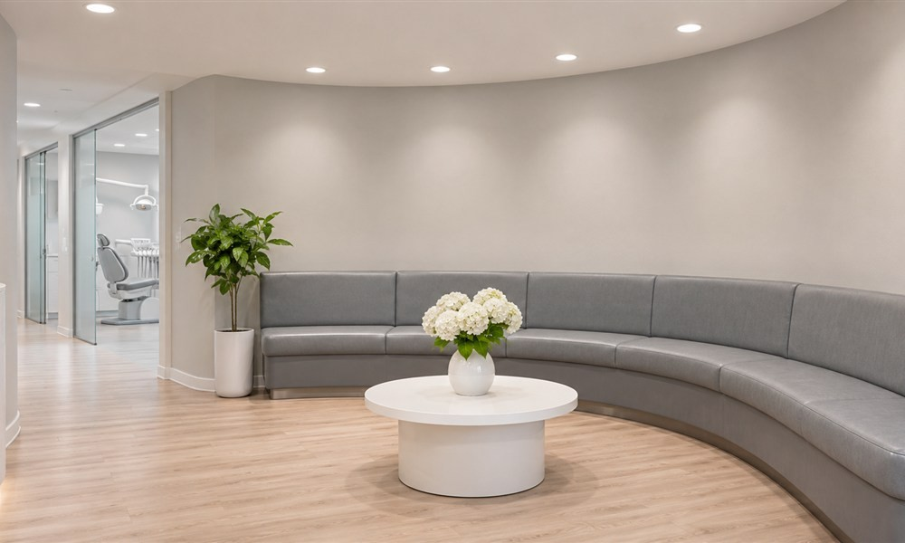
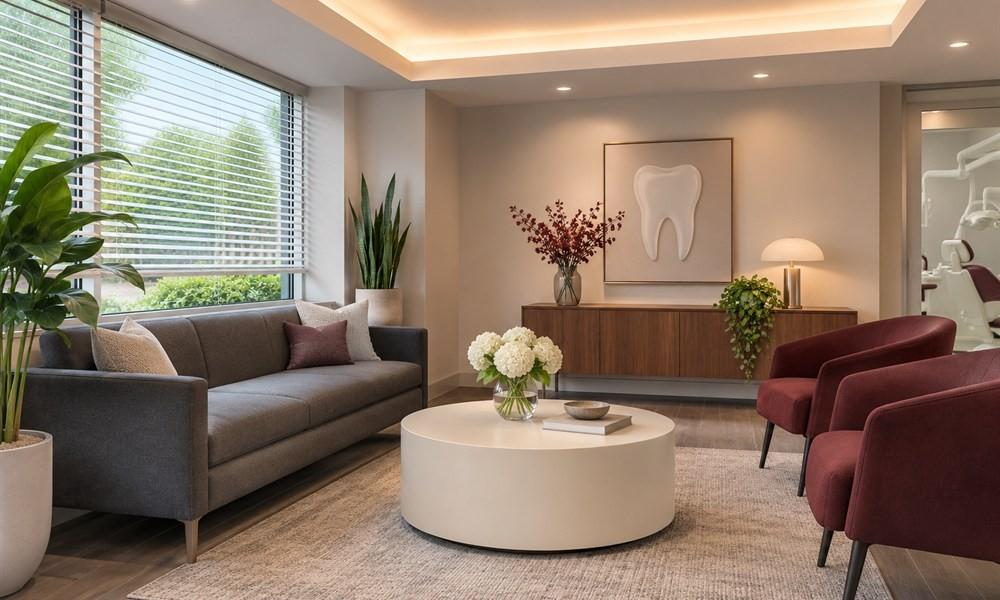
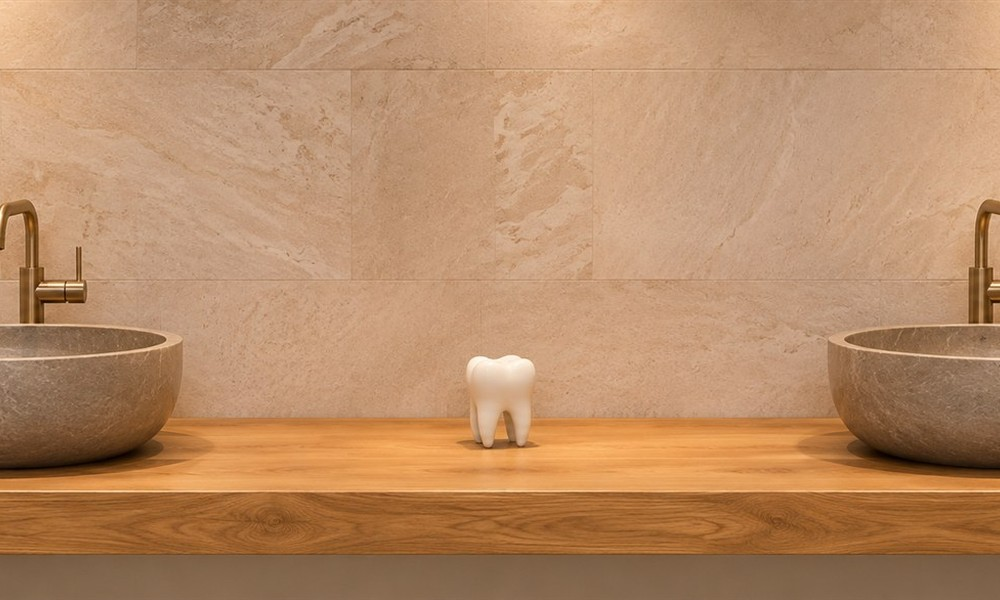
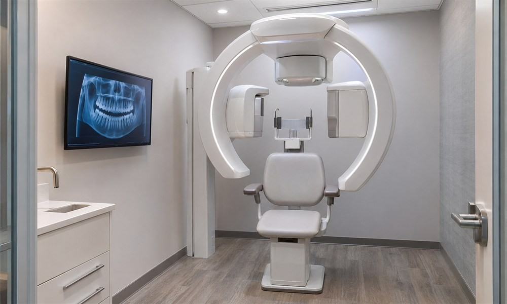
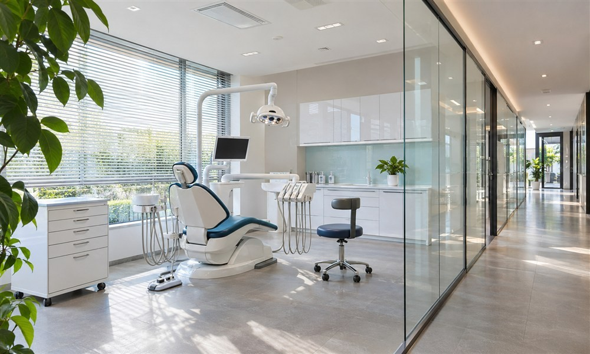
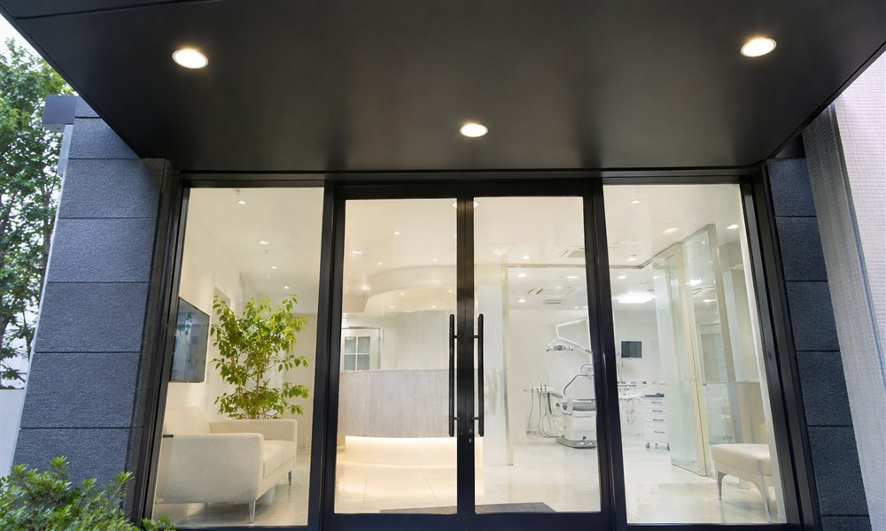

여문치과
진료 공간 안내
상담실부터 진료실까지, 내원 전에 공간을 살펴보세요.

접수와 대기를 나눈 실내 공간
접수대와 대기 좌석 사이에 식물을 두어 시선을 나눴습니다. 접수를 마친 뒤에는 다른 분의 상담에 방해받지 않고 차례를 기다릴 수 있습니다.
이야기에 집중하는 별도 상담실
독립된 방에서 상담을 진행합니다. 다른 내원객의 시선을 의식하지 않고 치료에 관한 고민과 질문을 말씀하실 수 있습니다.

차례를 기다리는 대기 좌석
접수 후 진료 차례를 기다리는 곳입니다. 소파에 앉아 쉬거나 준비된 음료를 드시며 머무실 수 있습니다.
진료마다 점검하는 진료 공간
진료가 끝나면 의자와 주변 접촉면을 정리하고 소독합니다. 다음 분의 진료에 필요한 기구도 위생 절차에 맞춰 준비합니다.


다른 진료와 분리한 수술·진정 진료실
수술과 진정 진료는 별도로 마련한 방에서 진행합니다. 공간마다 준비와 소독을 나누어 교차 감염 위험을 줄이고, 필요한 장비를 갖춘 곳에서 진료에 집중합니다.

편하게 머무는 대기 좌석
긴장을 덜고 기다리실 수 있도록 좌석과 조명을 골랐습니다. 창가와 벽 쪽으로 자리를 나누어 동선이 겹치지 않도록 배치했습니다.
진료 전후 이용하는 양치·정돈 공간
진료 전에 이를 닦거나 치료를 마친 뒤 옷차림을 정돈할 수 있는 곳입니다. 세면대와 거울을 별도로 마련했습니다.


검사 자료를 모으는 영상 검사실
불편의 원인을 살피기 위해 디지털 촬영 장비를 사용합니다. 촬영 자료는 구강 검사 결과와 함께 치료 계획을 세우는 데 참고합니다.
개인별 기구를 준비하는 진료 공간
입안에 사용하는 기구는 개인별로 준비합니다. 사용한 기구는 세척과 멸균 과정을 거쳐 보관하며, 진료 공간도 정해진 순서에 따라 관리합니다.


임플란트 진료를 위한 별도 수술 공간
복잡한 임플란트 수술은 독립된 수술 공간에서 진행합니다. 검사 자료와 필요한 장비를 미리 확인한 뒤 계획에 따라 진료합니다.